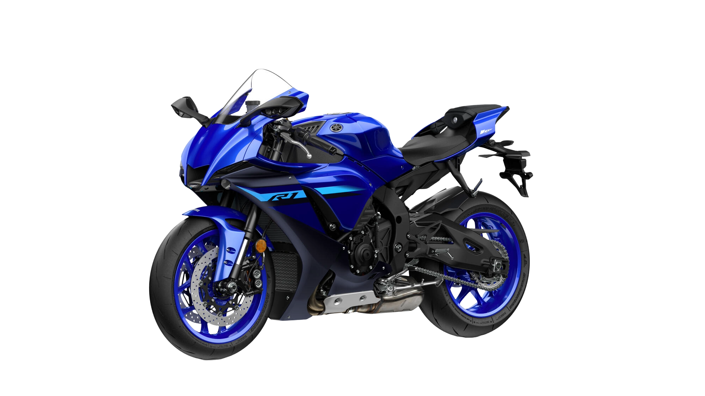
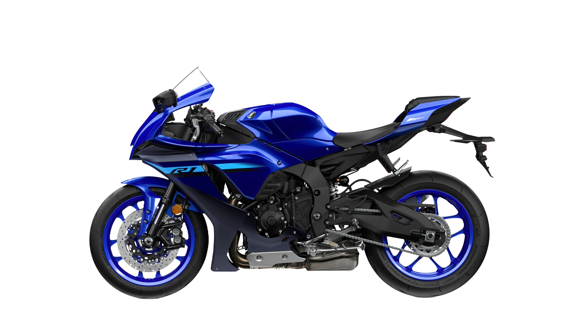
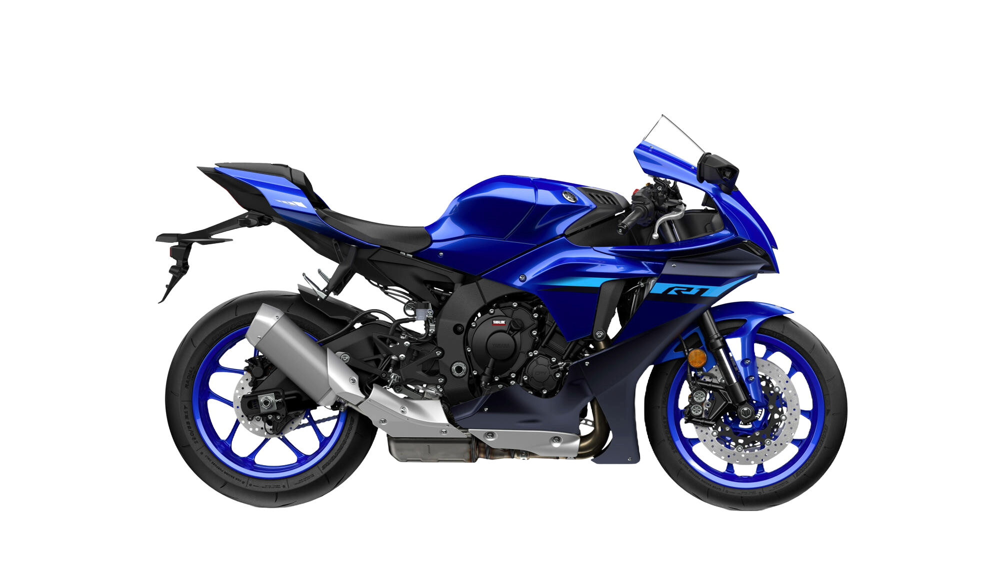

YZF-R1 SPECIFICATIONS
| Engine | Liquid-cooled inline 4 cylinder DOHC; 4-valves per cylinder |
| Displacement | 998cc |
| Bore x Stroke | 79.0mm x 50.9mm |
| Compression Ratio | 13.0:1 |
| Fuel System | Fuel injection with YCC-T and YCC-I |
| Ignition | TCI |
| Transmission | 6-speed; wet multiplate assist and slipper clutch |
| Final Drive | Chain drive |
| Front Suspension | 43mm KYB fully adjustable telescopic forks / Öhlins electronically adjustable |
| Rear Suspension | KYB fully adjustable telescopic forks |
| Front Tire | 120/70 ZR17 MC (58W) |
| Rear Tire | 190/55 ZR17M/C (75W) |
| Front Brakes | Dual 320mm hydraulic disc; Brake Control System and ABS |
| Rear Brakes | 220mm hydraulic disc; Brake Control System and ABS |
| Frame Type | Aluminium Deltabox |
| Rake/Trail | 24.0°/4.0 in |
| Overall Length | 80.9 in |
| Overall Width | 27.2 in |
| Overall Height | 45.9 in |
| Ground Clearance | 5.1 in |
| Seat Height | 32.5 in |
| Wheelbase | 55.9 in |
| Curb Weight | 450 lb |
| Fuel Capacity | 4.5 gal |
| Special Features | Both an Anti-lock Brake System (ABS) and Yamaha's Unified Brake System are adopted. With the Unified Brake System, operating the front brake also generates corresponding brake pressure at the rear brake. The distribution of braking force is based on input from the IMU regarding the machine's attitude and banking angle at the time of brake application. |
| Color Choices | Yamaha Blue |